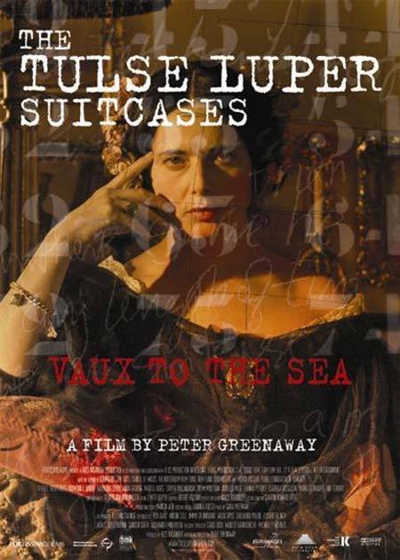
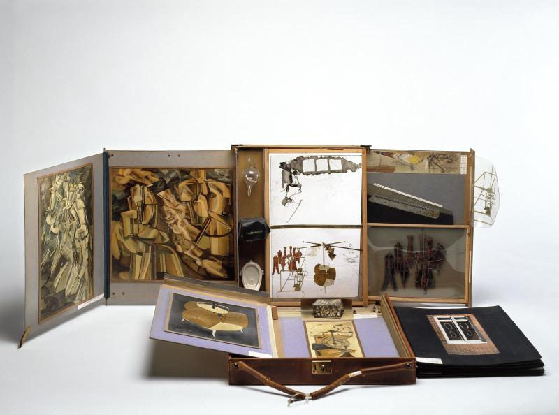
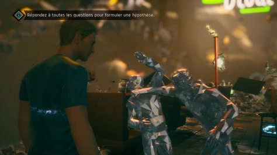
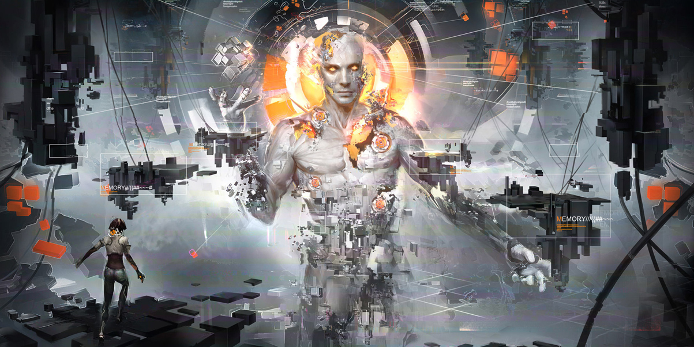

Les jeux vidéo essaient constamment de se renouveler en inventant des
mécaniques de plus en plus
sophistiquées. Aujourd’hui, nous allons nous intéresser à celle du palais mental. Le palais
mental
fonctionne grâce au visuel, au spatial et à l’émotionnel. Il sert à stocker des
informations.
Notre but tout au long de cet article est d’analyser plusieurs jeux afin de décoder les symboles du
palais
mental utilisés.
Le palais mental relève de l’abstrait. Chacun peut se le
représenter comme il le souhaite et la
hiérarchie
des informations est unique à chacun. Un jeu vidéo est fait pour tous, l’expérience peut être
personnalisée
mais elle suit tout de même un ou plusieurs scénarios définis.
Comment passe-t-on de l’abstraction du palais mental à la visualisation de celui-ci dans les jeux
vidéos ?
Représentation directe du palais mental
Psychonauts
Psychonauts est un jeu vidéo de Double Fine Productions sorti en 2005
dans lequel le joueur
incarne
Razputin, un enfant fuyant le cirque de sa famille pour intégrer le camp de vacances pour devenir
psychonaute, un agent spécial capable d’utiliser ses pouvoirs psychiques pour des missions
extraordinaires.
Raz va très vite s’apercevoir que quelque chose de sordide se passe dans ce camp. En effet, les enfants
se
font un à un voler leur cerveau ! En visitant les esprits de plusieurs personnages grâce à une
porte mentale
et en développant ses facultés psychiques, Raz va devoir sauver ses camarades en découvrant qui se cache
derrière ce complot.
Dans l’un des premiers niveaux du jeu, on rencontre l’agent spécial
Nein qui apprend à Raz à
utiliser sa
force mentale. Il l’entraîne dans un stand de tir qui se trouve à l’intérieur de son esprit : une
boîte dans
laquelle il y a une place pour chaque pensée et chaque souvenir a sa place. Cet agencement fait penser à
Peter Greenaway, avec sa série de films The Tulse Luper suitcases, dont le premier sorti en 2003
et où l’on retrouve 92 valises
représentant le monde par un « prisonnier professionnel » ou bien encore Boîte en Valise de
Marcel Duchamp,
qui est un musée portatif.

The Tules Luper Suitcases, Greenaway

Boîte en valise, Duchamp
L’agent Nein étant un personnage logique, méthodique et froid, son esprit
est donc représenté comme une
boîte d’un blanc asceptisé qui range les souvenirs dans d’autres boîtes monochromes et carrées
s’inspirant
du design minimaliste allemand des années 1960.
Tout ce qui compose l’esprit de l’agent Nein est sous contrôle. Il a
notamment des censeurs, petits
ennemis
à abattre dans les niveaux mentaux, qui s’attaquent à Raz car ils décrètent qu’il s’agit d’une anomalie
qui
n’a pas sa place dans cet esprit bien ordonné.
Pendant que Raz s’entraîne donc à tirer sur ces censeurs, il actionne un
levier qui laisse s’échapper le
désordre et le chaos chamboule tout l’esprit de l’agent Nein. Comme il s’est toujours efforcé de
réprimer
ses émotions, un censeur colossal a profité du chaos pour surgir du sol et s’attaquer à Raz qui tente de
lui
échapper en se faufilant entre les souvenirs maintenant éparpillés et les pensées destructrices.
Durant ses pérégrinations dans l’esprit des autres personnages, Raz trouvera des coffres contenant leurs
secrets enfouis. Ces secrets sont visualisables au travers de diapositives en noir et blanc.
On rencontre également des bribes de l’imagination des hôtes flottant
un peu partout dans les différents
niveaux. Elles représentent des éléments subliminaux à l’histoire des personnages. Par exemple, dans
l’esprit du coach Oleander, les bribes sont souvent des monstres casqués, des soldats ennemis ou des
armes
mais parfois on peut trouver des petits lapins tout mignons. On apprendra plus tard que le jeune
Oleander a
été traumatisé par son père boucher qui a tué son lapin de compagnie.
En dernière représentation visuelle de ce jeu, on peut croiser dans les niveaux des bagages
émotionnels
cachés, qui se lamentent d’avoir perdu leur étiquette.
Twin Mirror
Twin Mirror, le nouveau jeu d’aventure narrative de Dontnod, sortira le 1er décembre 2020.
Dans
celui-ci, le
joueur incarne Sam Higgs, ancien journaliste d’investigation retournant dans sa ville natale après
la
mort
de son meilleur ami.
Les phases interactives d'exploration sont assez classiques dans leur genre, puisqu'il suffit de
porter
son
regard vers un point d'intérêt pour en obtenir une brève description et, si l'option est disponible,
interagir davantage avec l'objet observé pour faire progresser l'histoire.
Avec ses années d’expérience en tant que journaliste d’investigation, Sam a
développé l’analyse de
l’environnement et de la situation dans laquelle il est. Il peut se plonger à certains moments dans ses
pensées, afin d'observer des choses à froid et reconstituer le cours d'événements majeurs. Dans un monde
fractal, représentant une scène de bagarre, le joueur peut observer différents indices préalablement
observés et choisir l'ordre de déroulement des événements.

Scène de bagarre fractale
Une fois l'ordre déterminé, le joueur peut valider son hypothèse, déclenchant une reconstitution
abstraite
des événements et, si ces derniers collent entre eux, l’histoire continue.
Cette mise en scène vogue également parfois dans le fantastique lorsque Sam se trouve en grande
période
d'anxiété. Il se trouve alors plongé dans un univers irréel et devra trouver le moyen de s'en
sortir.
Toutes ces mises en scène dans le jeu sont axées sur le palais
mental.
Enfin, lors de certaines représentations du palais mental, on retrouve des éléments en lévitation,
notamment
des objets de la société de consommation au ralenti qui sont projetés dans les airs.
Représentation indirecte du palais mental
Remember Me

Remember Me est un jeu d’aventure d’anticipation développé par
Dontnod en 2013 qui prend place dans
Néo-Paris en 2084. Le joueur y incarne Nilin, une hackeuse de la mémoire qui a pour mission de retrouver
ses
souvenirs volés par l’entreprise Memorize, une superpuissance qui exerce le monopole du contrôle des
souvenirs numérisés et déforme cette société futuriste.
Les objectifs principaux de Nilin seront de retrouver des personnes liées à
son passé et de modifier
leurs souvenirs de sorte à ce qu’ils répondent de leurs actes en interagissant avec les éléments de la
scène
représentée par une vidéo. Cette manipulation intrusive permet au joueur de devenir narrateur, metteur
en scène, et de réécrire les événements pour créer des nouvelles relations de cause à effet à l’instar
de
Martin Le Chevallier qui présentait des installations où les spectateurs pouvaient modifier le scénario.
Detroit: Become Human
Detroit: Become Human est un jeu vidéo français développé par Quantic
Dream sorti en 2018.
En 2038, dans la ville de Détroit aux États-Unis, les androïdes partagent le quotidien des êtres
humains
en
étant à leur service.
Connor, un androïde que le joueur joue, est négociateur dans les forces
spéciales de la police.
Lorsqu’il
analyse des scènes de crimes, il utilise le principe du palais mental en se projetant dans la scène
et
en
retraçant l’histoire.
L'histoire du jeu se déroule en fonction des choix et actions du joueur, qui
peuvent modifier
radicalement
le cours de l'histoire. Le jeu met le joueur dans le rôle du narrateur.
Le jeu propose également des Quick Time Event (QTE) qui est un élément de gameplay de type action
contextuelle consistant en une phase particulière où l'exécution des indications affichées à l'écran
dans un
temps imparti conditionne une issue pré-calculée .
Detroit:Become Human se pose la question de comment écrire et comment
raconter une histoire. Dans ce genre
de
scénarisation, il y a un rapport à la littérature, notamment à celle de Jacques Rancière avec Les
Bords
de
la fiction : ce qui distingue la fiction de l’expérience ordinaire, ce n’est pas un défaut de
réalité
mais
un surcroît de rationalité. Flaubert a changé la littérature en mettant en scène des personnages de
second
plan et des descriptions d’objets sans rapports directs à l’intrigue. C’est ce qu’on retrouve
maintenant
dans les jeux narratifs et notamment dans Detroit:Become Human où chaque petit détail est mis en
avant.
Résumé des clés pour le palais mental dans le jeu vidéo
Le palais mental dans le jeu vidéo peut donc être représenté de
différentes
manières, que cela soit
de
façon
directe (l’utilisation du palais mental est visuelle) ou indirecte.
Pour cela, les développeurs utilisent différentes clés : le principe
des
QTE, les histoires alternatives ou arbres narratifs, la hiérarchie des quêtes, le système de
rangement
et la logique de jeu.
Sources
Psychonauts. (s. d.). psychonauts.com. Consulté le 17 novembre 2020, à l’adresse http://www.psychonauts.com/
Twin Mirror : Le Nouveau Jeu Vidéo du Studio Français DONTNOD. (s. d.). Twin Mirror. Consulté
le
7 novembre 2020, à l’adresse 'https://www.twinmirror-game.com/'
Projets – DONTNOD Entertainment. (s. d.). DONTNOD Projects. Consulté le 17 novembre 2020, à
l’adresse https://dont-nod.com/projets/
Martin Le Chevallier, M. C. (s. d.). Martin Le Chevallier. Martin Le Chevallier. Consulté le
17
novembre 2020, à l’adresse http://martinlechevallier.net/
Peter Greenaway, P. G. (s. d.). Tulse Luper Journey. Tules Luper Journey. Consulté le 17
novembre
2020, à l’adresse http://www.tulseluperjourney.com/